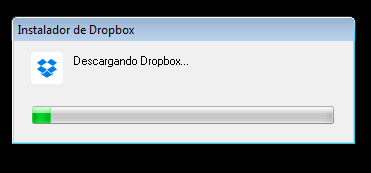
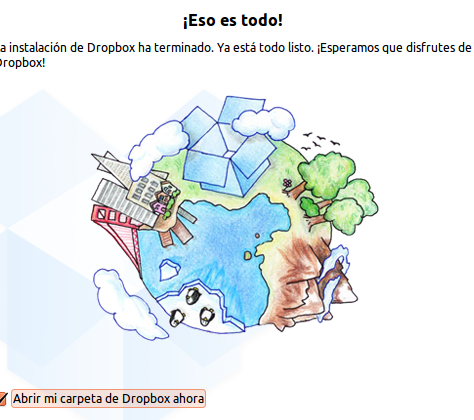
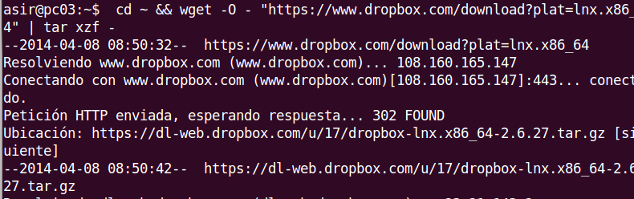
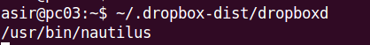
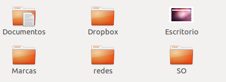
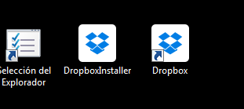
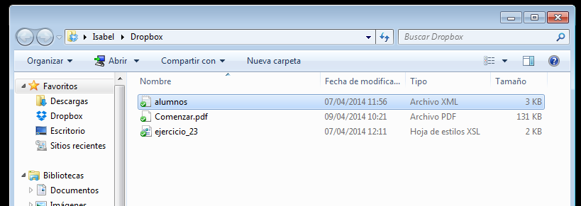
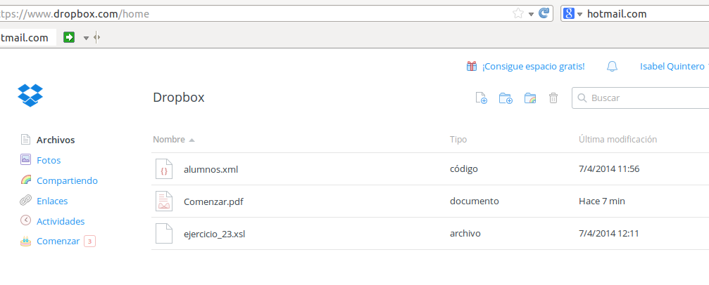

- Módulo: Fundamentos de Hardware
- Título del trabajo Almacenamiento en la nube.
- Componentes del grupo: Isabel Quintero
- Curso Académico: 2013/2014
- Fecha de entrega: 10 de Abril de 2014
Realizamos la instalación y configuración de la siguiente herramienta:"DropBox".
Una instalación sobre SO Windows.


Una instalación sobre SO Linux.


Al terminar con la instalación en ambos SO,mostramos su funcionamiento:
Se crea una carpeta de forma automática en ambos SO para almacenar los archivos que queramos almacenar o compartir
en la nube.


Adjuntamos archivos a dichas carpetas para comprobar que funciona correctamente.

Finalmente,entramos en nuestra cuenta en el navegador y confirmamos que estan dichos archivos.
